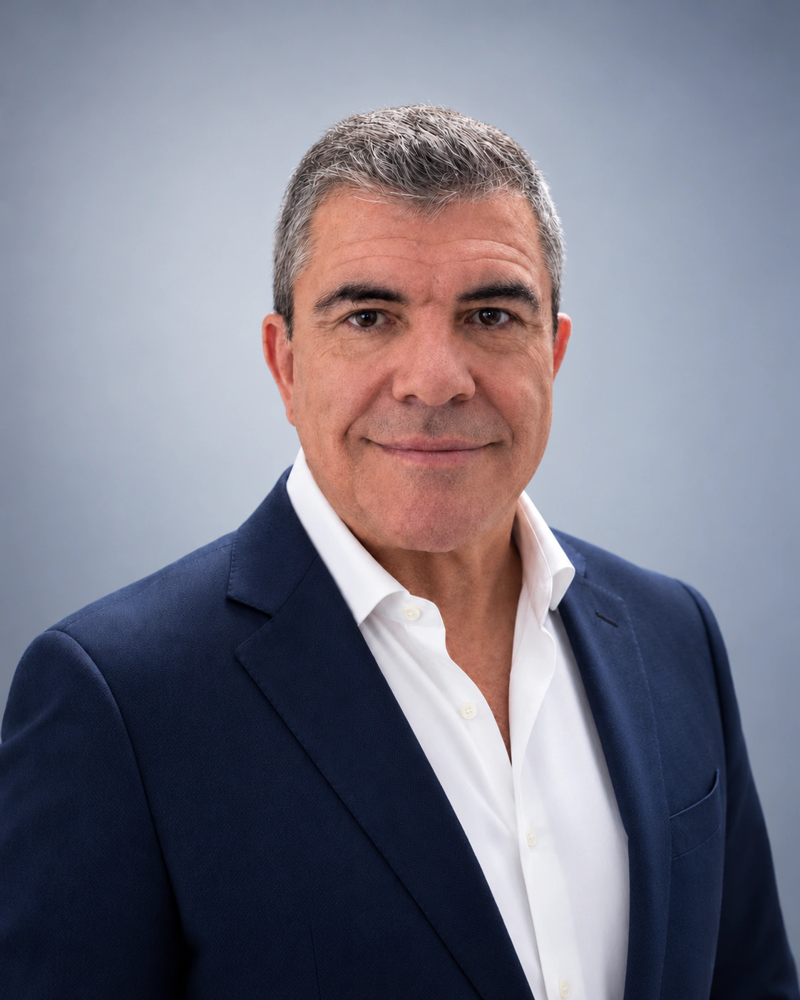
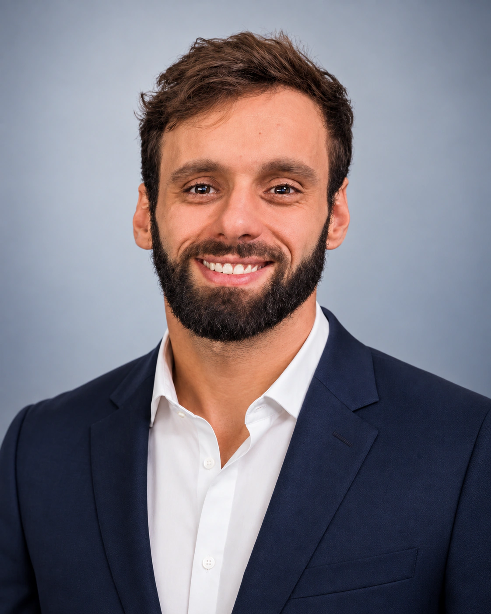
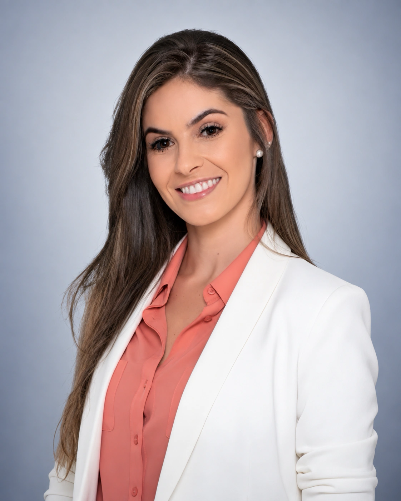

Consultor e corretor de seguros
Quem somos
Proteger patrimônios, empresas e famílias exige conhecimento, responsabilidade, experiência e compromisso com cada cliente.
Falar com a OriginalliNossa história
A trajetória da Originalli está diretamente ligada à experiência e à visão empreendedora de seu fundador, Moisés de Souza.
Com mais de 45 anos de atuação no mercado segurador, construiu sua carreira sobre ética, transparência e compromisso. Essa experiência formou uma empresa preparada para atender desde necessidades individuais até estruturas empresariais complexas.
Hoje, a Originalli combina tecnologia, relacionamento humano e conhecimento técnico para acompanhar o cliente desde o diagnóstico até a gestão das coberturas e dos sinistros.
Equipe Originalli
Profissionais responsáveis pela estratégia, pelo relacionamento comercial e pela operação cotidiana da corretora.



Direção
Proteger patrimônios, empresas e famílias por meio de seguros, gestão de riscos e atendimento consultivo.
Construir relacionamentos duradouros e gerar segurança por meio de consultoria securitária e proteção patrimonial.
Sede própria em Londrina, atuação nacional, suporte técnico e ferramentas para uma gestão contínua.
Nossos valores
Transparência e responsabilidade.
Busca pela solução adequada.
Valorização de pessoas e histórias.
Profissionalismo e evolução.
Relações sólidas e duradouras.
Assessoria jurídica parceira
Advogados parceiros com atuação em diferentes áreas do Direito, para orientar decisões pessoais, patrimoniais e empresariais.


Os serviços jurídicos são prestados de forma independente pelos profissionais responsáveis, mediante contratação própria, análise de viabilidade e verificação de eventuais conflitos. A Originalli não presta serviços advocatícios.